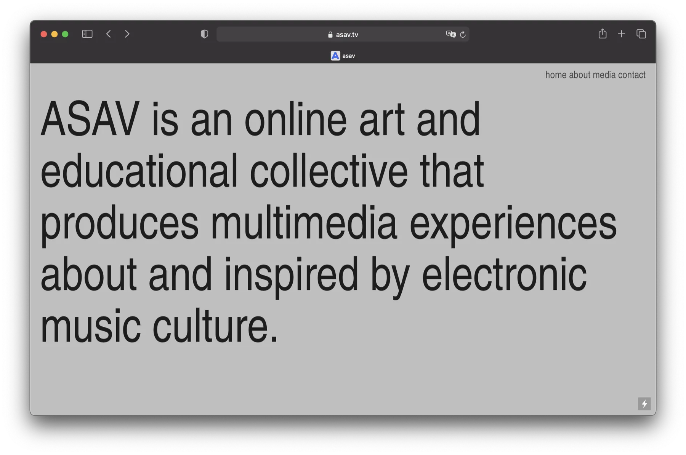
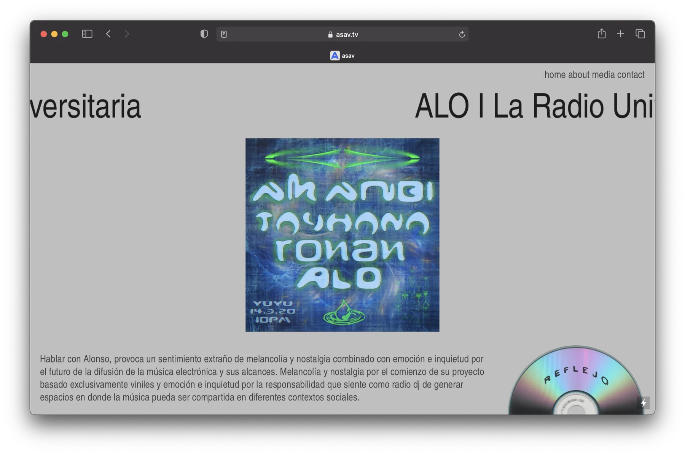
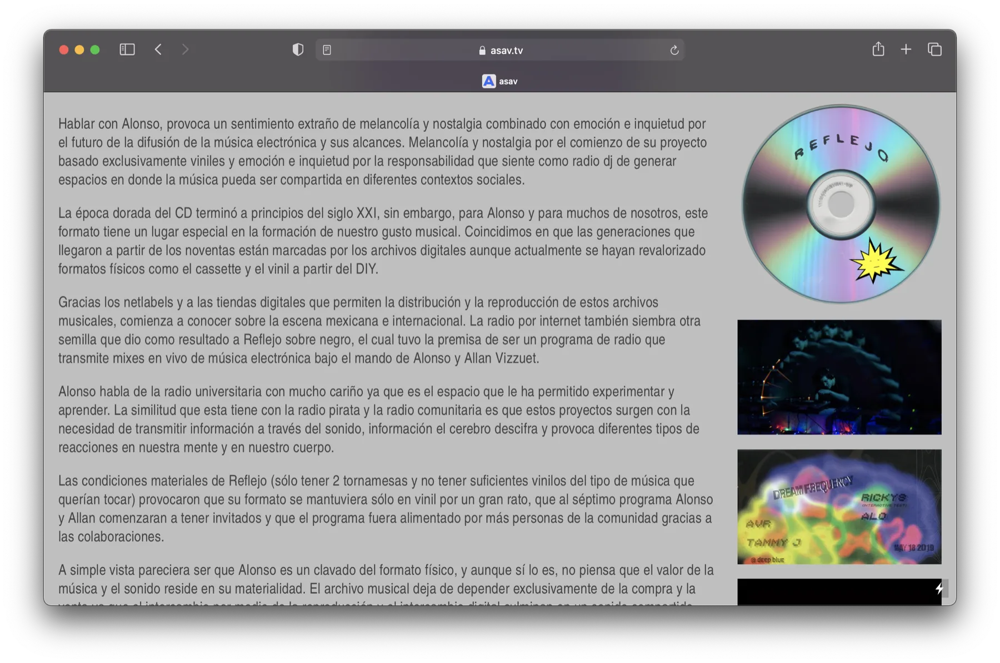

UX/UI design
ASAV
UX-UI design from prototyping and text-creation to aplication and activation online for the online web of ASAV.






cinemes verdi
mobile-centered interface design for verdi cinema with a casual and minimal look.prototyped with figma
blankigotchi sale
animation design for the sale of an interactive toy.bichi
bichi is about 3 small beings: their dramas, their love interests, their jealousy and their losts.